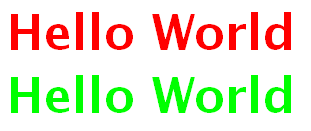
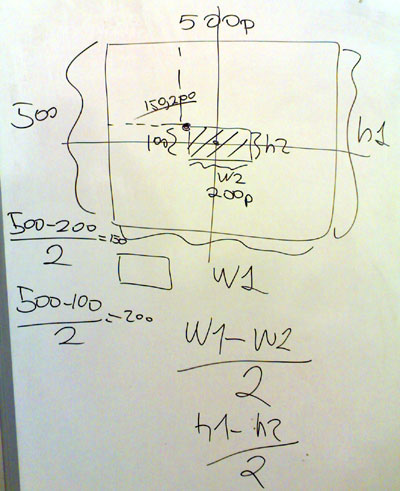
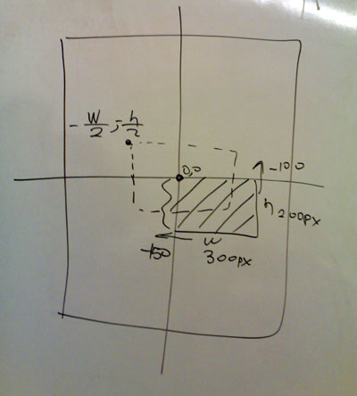

Web Geliştirme Eğitimi Dersleri, 010
4 Şubat 2008, Pazartesi
by-pass ( overloading )
- Deklarasyon’ların birbirini ezmesi konusu.
- Direktifler lineer olarak ( yukarıdan aşşağı ) işlendiği için, aktüel deklarasyon sonuncusu olur.
CSS
- h1
- {
- color: #f00;
- }
- #canvas h1
- {
- color: #0f0;
- }
HTML
- <h1>Hello World</h1>
- <div id="canvas">
- <h1>Hello World</h1>
- </div>
Sonuç

h1 dışarıda kırmızı iken, #canvas’ın içinde yeşil oldu.
Centering ( ortalama ) Teknikleri
Genel Mantık

Geometri’de ortalama hesabı
- HTML nesnesi içine ortalama yapmak için, dıştaki nesnenin mutlaka block-level yada önceden belirlenmiş bir width: ve height: ( genişlik / yükseklik ) bilgisi olmalıdır.
- Ortalama işlemi yapmak için, 2 nesne gerekir.
- Nesnenin birini, diğerine göre ortalayabiliriz.
- Genişliği : 500px ( width ) , Yüksekliği : 500px ( height ) olan kutunun içine, 200x100 px’lik bir kutu ortalıyoruz.
- left: ( genişlik_büyük - genişlik_küçük ) / 2
- top: ( yükseklik_büyük - yükseklik_küçük ) / 2
- ( 500 - 200 ) / 2 = 150
- ( 500 - 100 ) / 2 = 200
Negatif Marjin

Negatif marjin ile oratalama tekniği.
- BODY’ye göre bir div’i ortalamak için, önce div’in left: ve top: bilgisini 50% yaparız.
- Böylece div’in sol üst köşesi, BODY’ye göre tam orta noktaya gelir.
- div’in genişliği / 2 kadar - marjin vererek x eksenini düzenleriz. ( 300px ise, 300/2 = 150 yani -150 )
- div’in yüksekliği / 2 kadar - marjin vererek y eksenini düzenleriz. ( 200px ise, 200/2 = 100 yani -100 )
- div
- {
- position: absolute;
- left: 50%;
- top: 50%;
- margin-left: -150px;
- margin-top: -100px;
- }
Kullanmadığımız TAG’ler
Belkide bugüne kadar haberimiz bile olmayan, aslında çok işimize yarayabilecek, istediğimiz gibi modifiye edebileceğimiz tag’ler :
Genelde bu komutlar Semantik ( Anlam Bilimi ) ifadeler için kullanılır.
- <strong> : BOLD yerine ( <b> ) artık bunu kullanıyoruz.
- <em> : ITALIC yerine ( <i> ) artık bunu kullanıyoruz.
- <q> : In-line, Quotation için kullanılır.
- <abbr> : In-line, Kıslatmalar için kullanılır.
- <address> : In-line, Adres bilgisi vermek için kullanılır.
- <s> : In-line, Strike-out ( üzerini çizmek ) için kullanılır.
- <blockquote> : Block-level, Quotation için kullanılır. Her browser kendine göre margin/padding uygular.
- <caption> : <table>’da kullanılır.
- <label> : In-line, form elemanları için etiket olarak kullanılır.
- <cite> : In-line, Phrase ( deyim / ibare ) elements grubundandır.
- <kbd> : In-line, Keyboard Entry anlamındadır, yani kullanıcı tarafından girilmiş text için...
- <fieldset> | <legend> : Block-level, <legend> ile kullanılır, formlar’la beraber kullanılır.
- <pre> : Block-level, Pre-Formated Text anlamındadır. TAB , LINEBREAK gibi şeyler çalışır.
- <sub> | <sup> : In-line, Sub-Script, Super Script anlamındadır.
<q>
HTML
- Merhaba benim adım <q>vigo</q>
SONUÇ
Merhaba benim adım vigo
<abbr>
HTML
- <abbr title="World Wide Web">WWW</abbr> aslında World Wide Web’dir
SONUÇ
WWW aslında World Wide Web’dir
<s> | <sub> | <sup> | <small> | <big>
HTML
- Bana olan borcun <s>1.000 YTL</s>’den 500 YTL’ye düştü
- Suyun kimyasal formülü, H<sub>2</sub>O ve 2<sup>2</sup> = 4
- Yazı içinde birden <big>büyük</big> yazarken birden de <small>küçük</small> yazabilirim.
SONUÇ
Bana olan borcun 1.000 YTL’den 500 YTL’ye düştü
Suyun kimyasal formülü, H2O ve 22 = 4
Yazı içinde birden büyük yazarken birden de küçük yazabilirim.
<blockquote>
HTML
- <blockquote>
- <p>Merhaba</p>
- </blockquote>
ÖNEMLİ!
Mutlaka içinde bir paragraf olmalı!
<fieldset> | <legend> | <label>
HTML
- <fieldset>
- <legend>Üyelik Formu</legend>
- <label for="user_email">E-Posta</label><input type="text" id="user_email" name="user_email"/>
- </fieldset>
<pre>
HTML
- <pre>
- tab var! 2 tab
- </pre>
Semantik Yapı ve Web 2.0
- Web 2.0, ilk kez O’Reilly tarafından telaffuz edilmiştir. Son yıllarda Mac OS X tarzı grafikler, RSS-Feed’ler ve A.J.A.X ( Asynchron Javascript and XML ) / Javascript ağırlıklı web uygulamaları WEB 2.0 olarak tanımlanmaktadır.
- 1999 yılından beri varolan, sadece Internet Explorer tarafından kullanılan xmlHttp nesnesi, günümüz modern browser’lar tarafından da desteklenince ortaya o meşhur AJAX çıkmıştır.
- Önceleri tüm işlemler sunucu tarafında ( SERVER SIDE ) işlenip Client’a sadece işlenmiş HTML gönderilirken, artık pek çok iş Client’a yüklenmiştir. ( Javascript ile )
- AJAX ile siteler arası entegrasyon kolaylaşmış, SOCIAL-NETWORKING kavramları, BLOG’lar ve PAYLAŞIM siteleri çok popüler duruma gelmiştir.
- Yazdığımız HTML’in anlam olarak da birşeyler ifade etmesi olayı
- Başlıklar için uygun tag’leri kullanmak, metinleri paragraflardan oluşturmak gibi...
- Gereksiz yere <br/> kullanmamak!
- Örneğin, blog siteniz var, başlıkları <h1> içinde yazmak, postları da <p> yada <div> içinde yazmak
ESKİ TARZ KÖTÜ YAZIM
- <b>Başlık</b><br><br>
- paragraf 1<br><br>paragraf 2
WEB 2.0 / Semantik Yazım
- <h1>Başlık</h1>
- <p>Paragraf 1</p>
- <p>Paragraf 2</p>
yada
- <h1>Başlık</h1>
- <div class="paragraph"><p>Paragraf 1</p></div>
- <div class="paragraph"><p>Paragraf 2</p></div>